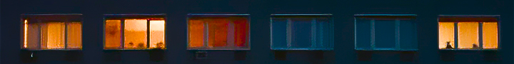
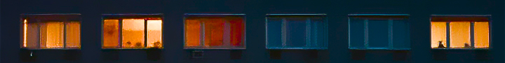
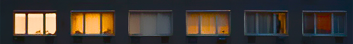
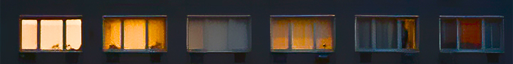

A minute before the destruction of the earth.
They didn't know. They didn't know that was the last moment of calm


 click
click
THE DINNER TABLE WAS FILLED WITH THE SOUND OF SIZZLING MEAT AND LAUGHTER. DAD CRACKED A JOKE, AND THE CHILD SPILLED THEIR COLA, LAUGHING. MOM SET THE TIMER, AND THE FAMILY NATURALLY TURNED THEIR FACES TOWARD THE CAMERA. CLICK—A FLEETING MOMENT OF JOY WAS CAPTURED IN A PHOTO. IT WAS JUST AN ORDINARY DAY. A FAMILIAR EVENING, FAMILIAR SMILES. BUT RIGHT AFTER, THE LIGHTS IN THE HOUSE BEGAN TO FLICKER. THE SLIGHT TREMOR SPREAD LIKE A WARNING, AND THE LAUGHTER FADED. THAT PHOTO BECAME THE LAST IMAGE THEY EVER TOOK TOGETHER. ONLY THAT PEACEFUL MOMENT REMAINED—A MEMORY JUST BEFORE THE WORLD BEGAN TO SHAKE. AND THEIR SMILES STAYED FROZEN IN TIME. NO ONE KNEW THAT MOMENT WOULD BE THEIR LAST.

 


 


IT WAS AN ORDINARY EVENING. THE SKY OUTSIDE THE WINDOW WAS CLEAR AND DISTANT, SPOTLESS IN ITS SERENITY—YET NO ONE NOTICED. ON THE MUTED TELEVISION, THE NEWS PLAYED SILENTLY. THE CHILD SAT HUNCHED OVER, COMPLETELY IMMERSED IN THEIR GAME. IN THE KITCHEN, THE SCENT OF FRIED RICE LINGERED IN THE AIR, AND THE SOUND OF DISHWATER FORMED A STEADY RHYTHM. EVERYTHING FELT NORMAL, AND THAT SENSE OF NORMALCY WAS UNSHAKABLE.
EVERYONE'S GAZE REMAINED LOW, ANCHORED IN THEIR ROUTINES. NOT A SINGLE PERSON THOUGHT TO LIFT THEIR HEAD AND LOOK UP AT THE SKY. THE SKY, HOWEVER, QUIETLY BORE A SIGN—AN OMEN—UNFOLDING BEYOND THEIR AWARENESS. AND WITHOUT WARNING, IT DREW A LINE THROUGH THE QUIET EVENING.
A SINGLE BEAM OF LIGHT TORE THROUGH THE SKY AND CAME CRASHING DOWN. ONLY THEN DID WE UNDERSTAND: THE SKY, WHICH WE HAD FAILED TO LOOK AT, HAD CHANGED FIRST.